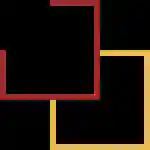
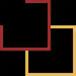

De belles perspectives d’avenir
La 2D, une évolution impressionante
La 2D a énormément changé depuis le début de l’animation, nous pouvons le voir notamment avec l’animation japonaise et par exemple One Piece, ce manga, écrit et dessiné par le japonais Eichiiro Oda, est adapté en animé depuis 1999. Depuis cette date, les techniques d’animation ont bien changé. Que ce soit au niveau des traits, de la fluidité ou des couleurs, excepté le nom et l’aspect global, les personnages que nous suivons depuis que nous sommes petit n’ont plus rien à voir avec nos souvenir d'antan.
Evolution de Luffy (One Piece) entre 1999 et 2019
Cependant, de nos jours il arrive encore que des animés aient une animation que l’on pourrait considérer de catastrophique comme Seven Deadly Sins alors que d’autres sont considérés comme des chefs d’œuvre, il suffit de comparer Seven Deadly Sins et Demon Slayer, qui est considéré comme ayant la meilleure animation des dernières années, pour voir le gap qui sépare les deux œuvres.
Meliodas et Elisabeth de Seven Deadly Sins
La 3D (ou CGI), un avenir dur a utiliser
La 3D (aussi appelée CGI) sert a allégé la charge de travail des animateurs, puisqu’elle est produite par un ordinateur. Elle est cependant compliquée à intégrer avec de la 2D, là où certains s’en sortent sans problème comme pour Chainsaw Man par exemple, d'autres y arrivent moins, nous pouvons prendre comme exemple la première partie de la saison 4 de L’attaque des titans. Cette comparaison est d’autant plus normale que c’est le même studio d’animation (MAPPA) qui s’est occupé des deux, là où Chainsaw Man possède une animation dynamique et fluide, L’attaque des titans semblait être une cinématique d’un jeu vidéo mobile de faible qualité. Les animateurs travaillant sur L’attaque des titans se sont tout de même bien rattrapés sur la partie 2 de cette même saison 4 en mariant bien mieux la 2D et la 3D, donnant un aspect bien plus agréable au visuel final.
Eren en version titan dans la saison 4 de L’Attaque des Titans
 EN
EN


 
